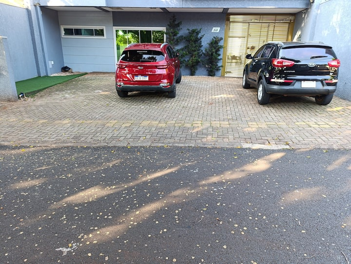

Tudo pesquisado direto nos sites — preço, link e foto de verdade, pra ninguém ficar no escuro.
✅
Carro reservado! R$ 461 por pessoa, já com tudo incluso
SUV Médio (T-Cross, Kicks ou Creta) na Unidas, reserva confirmada em 22/09, pagamento antecipado. Isso é aluguel + proteção + gasolina + pedágio, dividido em 5.
A viagem
📍
Saída de SJC: quinta, 08/out, 19h (carro retirado às 15h) Rodízio ao volante: Cíntia 19h-22h · Leandro 22h-01h · Alison 01h-04h · Emerson 04h-07h · Alice 07h-10h
🏠
Em Foz: sexta e sábado (09-10/out) — 2 noites, check-in a partir das 14h-15h
☀️
Domingo, 11/out: check-out até 11h, dia livre pra Cataratas e restaurantes em Foz (ver roteiro abaixo)
🔙
Saída de Foz: domingo, 11/out, 20h Rodízio ao volante: Cíntia 20h-23h · Leandro 23h-02h · Alison 02h-05h · Alice 05h-08h · Emerson 08h-11h — chegada em SJC por volta das 11h de segunda
🚙
Carro devolvido: segunda, 12/out, até 16h (a loja tem horário reduzido nesse feriado)
Roteiro dia a dia
Roteiro montado pelo grupo — dá pra ajustar, é só o ponto de partida
🇦🇷
Sexta (09/out) — Argentina
Chegada em Puerto Iguazú por volta das 10h-11h, direto da estrada. Centro de Puerto Iguazú, feirinha, Hito Três Fronteiras, Casino City Center Iguazú. Almoço: @mucha_previa. Jantar em aberto. Check-in na hospedagem à noite.
🇵🇾
Sábado (10/out) — Paraguai
Chegada no microcentro de Ciudad del Este por volta das 8h30-9h. Lojas: Shopping China, CellShop, Shopping Paris, New Zone, SA Shop (endereços na seção de mapas). Almoço e jantar em aberto — dá pra ser na própria hospedagem à noite.
🇧🇷
Domingo (11/out) — Foz do Iguaçu
Dia livre em Foz (Cataratas é a pedida óbvia). Check-out até 11h, malas no carro. Almoço: Restaurante Barracão, Restaurante Roque ou Cantina La Dona Elvira. Jantar: Cantina La Dona Elvira ou Shawarmaria Asmars. Saída de Foz às 20h.
O carro — já reservado
SUV Médio Volkswagen T-Cross, Nissan Kicks ou Hyundai Creta
Reserva confirmada na Unidas em 22/09, retirada 08/10 15h, devolução 12/10.
Onde ficar em Foz
Sexta e sábado (09→11/out), 2 noites, pra 5 pessoas — sem luxo, só um lugar simples e limpo pra dormir. Preços do Booking já somam as taxas do anúncio · conferido em 22/09
🛏️
💰 mais baratoResidencial Floresnota 8,0 (9 avaliações) · Booking.comR$ 910 total · 2 noites (R$ 810 + R$ 100 de taxas)Ver no Booking →
🛏️
⚠️ sem vaga nas datasLinda casa completa confortávelnota 8,0 (53 avaliações) · Booking.comIndisponível em 09→11/out (conferido 22/09) — vale checar de novoVer no Booking →

⚠️ sem vaga nas datasCasa confortável, bem localizada3 quartos · 4 camas · nota 4,95 (44 avaliações) · AirbnbIndisponível em 09→11/out (conferido 22/09) — vale checar de novoVer no Airbnb →
Dicas de compra no Paraguai
Resumidas de um vídeo-guia sobre Ciudad del Este
💵
Cota de US$ 500 por pessoa
Acima disso, pode ser taxado na volta. Leva RG ou CNH (as duas são aceitas pra cadastro nas lojas).
🏬
Compre só em loja grande e conhecida
Nissei, CellShop, Intershop, Mega Eletrônicos, Shopping Paris ou Shopping China. Compare preço entre 2-3 lojas antes de fechar.
⚠️
Cuidado com o golpe do "selo Anatel"
Desde 2019 não existe mais taxa de homologação pra celular de uso pessoal no Brasil. Se uma loja cobrar isso separado, é golpe — IMEI não é a mesma coisa que homologação.
Mapa das lojas — salvar offline
Sem internet internacional lá: abra cada link AINDA NO BRASIL (com wifi ou dados), e no Google Maps toque em ⋮ → "Baixar mapa offline" cobrindo Ciudad del Este. Assim o pino e a rota funcionam sem sinal.